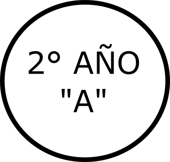

Escuela de Educación Secundaria N°1
Chascomús, Buenos Aires
___Ir a:
___Biblioteca
___Centro-Estudiantes___
As.Cooperadora___
Docentes___
home
__Volver a Inicio
Biblioteca
Centro-Est
As.Cooper.
Docentes
home
TRABAJOS PRÁCTICOS DE:
ARTES PLÁSTICAS VISUALES
TRABAJOS AÑO 2021:
Artes Plásticas Visuales -Material bibliográfico - VIDEO - CAOS, Luis Felipe Noé
Accederás a YouTube: "CAOS" -Luis Felipe Noé-
Artes Plásticas Visuales -VIDEO: Cinco pinturas y una película para entender a Picasso
Accederás a YouTube: Reportajes, "Cinco pinturas y una película para entender a Picasso"
MARZO 2021 - Artes Plásticas Visuales - Trabajo Práctico N° 1
Descargar archivo en página nueva
argentina.gob.ar - PLANTAMOS MEMORIA EN LOS PARQUES NACIONALES
Accederás al sitio: argentina.gob.ar
LOS NOMBRES DE LAS LISTAS NEGRAS DE LA DICTADURA
Accederás al sitio: infobae.com
24 de marzo de 2021 - 45 Años del Golpe de Estado
Accederás al sitio: comisionporlamemoria.org
MARZO 2021 - Artes Plásticas Visuales - Trabajo Práctico N° 2
Descargar archivo en página nueva
MARZO 2021 - Artes Plásticas Visuales - Trabajo Práctico N° 3
Descargar archivo en página nueva
- PABLO BERNASCONI -
Accederás a la página de Pablo Bernasconi
MARZO 2021 - Artes Plásticas Visuales - Material Bibliográfico para Trabajos Prácticos N° 4 y 5 - "La ciencia de Color"
Descargar archivo en página nueva
MARZO 2021 - Artes Plásticas Visuales - Trabajos Prácticos N° 4 y 5
Descargar archivo en página nueva
- ANA VON REBEUR - LA CIENCIA DEL COLOR -
Accederás a YouTube
MARZO 2021 - Artes Plásticas Visuales - Trabajos Prácticos N° 6
Descargar archivo en página nueva
-Artes Plásticas Visuales: VITRALES DE PAPEL -
Accederás a YouTube
-Artes Plásticas Visuales: TALLER VITRAL -
Accederás a YouTube
-Artes Plásticas Visuales: Entrevista a María Paula Farina Ruiz -
Accederás a YouTube
MARZO 2021 - Artes Plásticas Visuales - Trabajos Prácticos N° 7
Descargar archivo en página nueva
-Artes Plásticas Visuales: VIDEO "Violencia de Género" -
Accederás a YouTube
-Artes Plásticas Visuales: VIDEO "La historia de Julia, la niña que tenía sombre" de Christian Bruel -
Accederás a YouTube
-Artes Plásticas Visuales: VIDEO "Hanoch Piven" -
Accederás a YouTube
-Artes Plásticas Visuales: VIDEO "Figura humana en movimiento" -
Accederás al canal educ.ar
MARZO 2021 - Artes Plásticas Visuales - Trabajos Prácticos N° 8
Descargar archivo en página nueva
Artes Plásticas Visuales - Trabajo Práctico INTEGRADOR
Descargar archivo en página nueva
Volver a: MATERIAS